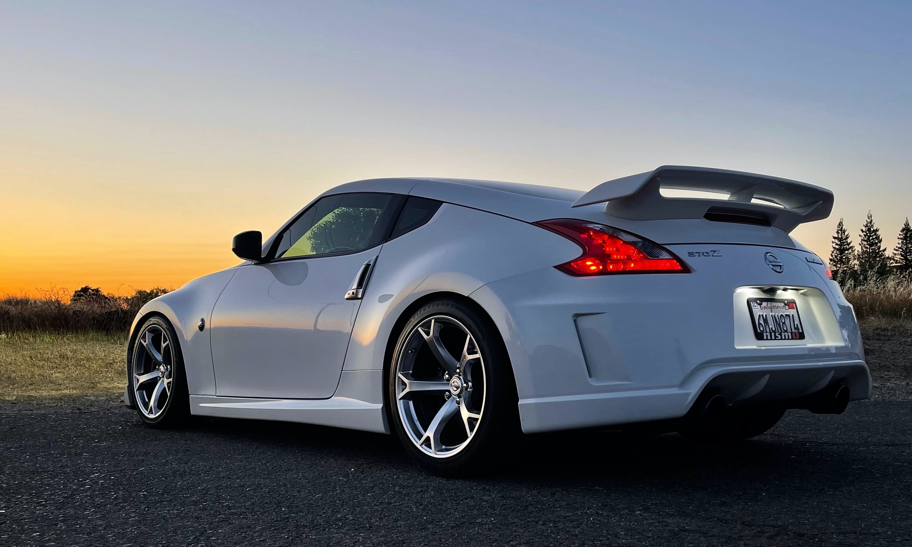

- it's that a SUPRA?!
O Supra possui linhas agressivas e um aerofólio para gerar sustentação negativa e dar mais esportividade ao design do carro. O Supra é equipado com muita tecnologia, dispõe de controle de tração e uma excelente capacidade de frenagem.
SUPRA MUITO FODA
- 370Z
O 370 Z usa rodas de aro 19" de alumínio e é equipado com um 3.7 V6 de 332 cv - que pode fazer par com câmbio manual de seis marchas ou automático de sete velocidades.
370Z MAIS FODA AINDA
SUPRA
- SUPRAO BRABO 